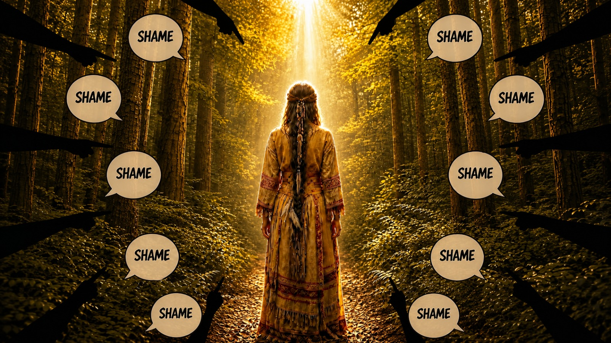

Chapter I
The Oldest Instrument
Shame (the one projected on you) is the oldest instrument we have for controlling human beings, and it is still the best one we have built. As I pen the rest of this essay, please understand that externalized shame is what I am referring to. The inner one, the moral compass is a different essay and that too shall come forth but this one is focused on the form of shame that others use to control you.
You'd be surprised, you'd think control happens through law or violence or money. Those are expensive, and they can be seen coming. Shame costs nothing, leaves no marks, and does not require anybody to be in the room.
Shame is used like the metal hook used by a mahout. Watch a mahout with an elephant. Several thousand kilos of animal that could end him in a second, steered by a small metal hook placed behind the ear, where the skin is thinnest. He does not overpower it. He does not need to. And once the animal has been handled long enough, the hook stops being used at all. A touch is enough. The memory of the hook does the rest of the work, for the remainder of the elephant's life.
That is shame. Applied early, applied precisely where you are thinnest, and after a while it does not need to be applied at all.
Every institution we have runs on it. Families run on it, in a sentence delivered to a child young enough that it goes in underneath argument and stays there: "what will people say?" Schools run on it. Religion runs on it. Caste runs on it. Marriage runs on it. The state runs on it. So does the mob on your timeline, which is only the state's work outsourced to volunteers who do it for free.
And every one of them is doing the same single thing.
Drawing a box, and informing you that you are permitted to exist inside it.
Whatever fits the outline is you. Whatever does not fit is your defect. Your appetite. Your voice. Your anger. Your body. Your face. Your ambition, your questions, your desire, every part of you that exceeds the shape. Those parts are not to be examined and not to be expressed. They are to be hidden, and you are to experience the hiding as decency.
Because shame is not the feeling that you have done something wrong. That is guilt, and guilt is useful, because an act can be repaired. Shame tells you that the wrong thing is you.
And when that is told to you you end up thinking there is no repair available for what you are, all you can do is become less of you. So you make yourself smaller. And smaller. Until the parts of you that did not fit the box have stopped transmitting altogether, and you call the silence maturity.
If shame corrected anything, the loudest shamers alive would be the finest human beings among us.
Look at them and tell me that is what you see.
It does not correct. It has never corrected. It does exactly one thing, and it does it extremely well.
It makes you disappear.
A point to note, one that I mentioned earlier. In most humans there is an inner moral compass which, from a vibrationary or a feelings perspective, feels very similar to shame. That is something else altogether, and it does help you become a better version of yourself. It is your conscience, and it awakens when you violate the basic tenets of a soul led human. That one needs to exist, else we would all be psychopaths operating from our base animalistic instincts. External shame, the one society imposes on you, does none of that work. Only the disappearing.
But you do not need to be afraid of shame. A hook is only a hook. The moment you can see it in somebody's hand it stops being a mysterious force operating on your life and becomes a piece of equipment that a person is using on you, and equipment can be refused.
But you have to be able to see it. And the first place to look is not the mind.
Chapter II
What it does to the body
Shame is the only social emotion with a stereotyped physical signature that you can recognise across cultures and across species.
Head drops. Shoulders roll forward. Gaze goes to the floor. Chest hollows. The throat closes. The whole organism reduces its own surface area, as if trying to occupy less space in the room.
That is not an expression. That is a submission display. You will find versions of it in every social primate, and it means the same thing in all of them: I withdraw my claim, do not continue.
It is not fight and it is not flight. Both of those mobilise you. Shame does the opposite. It is the shutdown branch: heart rate down, blood pressure down, the body going still because it has assessed that neither fighting nor running is survivable and the only remaining move is to become smaller than the threat.
Acutely, that is survival intelligence. It is not a malfunction.
Chronically, it is a disease process.
Nine years of looking at bodies that live in that state. Reduced motility, reduced stomach acid, compromised vagal tone, a digestive system instructed to stand down. Add a decade of low-grade HPA dysregulation and you get the picture that walks into my practice constantly. The bloating. The overgrowth that will not clear no matter how clean the protocol. The thyroid that tests borderline forever. The fatigue that sleep does not touch.
I am not claiming suppression caused all of it. I am telling you that there is a physiology of chronic collapse, that it is well described, and that it is not compatible with a functioning gut. And that the women who arrive with it almost always have a sentence they have not said to somebody.
The throat is not a metaphor. Ask any practitioner who works with women about the tightness, the lump, the voice that goes thin under pressure. The organ of speech shuts down along with everything else.
The body is not being poetic. It is closing a channel that has repeatedly produced punishment.
Chapter III
What came back
Two weeks ago I said something in public about the way this country is governed. I am not going to relitigate it here. I said it, I meant it, I stand behind the substance of it, and this article is not a defence.
One fact about the clip, and then I am finished with it. The video that was cut, reposted and shared was edited. It did not carry what came before it or what came after. Everybody responding was responding to a fragment.
This is the point where a person is expected to produce the full recording and ask to be judged on it. I am not going to do that, and not because the edit does not matter. Because of what the edit proves.
If the objection had been to my argument, the argument would have been necessary. You cannot disagree with something you have deleted. The clip was cut to exactly the length required to establish that I am a certain kind of woman, and then it was distributed, and it did its work perfectly, which the whole thing would not have done.
Nobody needed to know what I said. They needed a specimen.
So this article is about what came back.
Because what came back was not an argument. Across hundreds of posts, in every language this country speaks, from accounts with very large followings, I have not yet found one response that engaged the content of what I said. Not one. What I found instead was seven instruments, deployed over and over, by people who have never met me.
I was declared mentally ill. Unstable. Disturbed. In need of intervention, in need of therapy, mentally sick. A functional medicine practitioner diagnosed with insanity by strangers on the basis of a video. This is the oldest available frame for a woman who raises her voice, and it has not been retired because it still works.
I was attacked through my mouth. Foul mouth. Gutter mouth. Looks like she was born in the gutter. The organ of speech made into an object of disgust.
I was attacked through my face. Ugly. Look at her. Repulsive. Men who have never spoken to me pausing to record that they do not find me attractive, as though my appearance were a submission I had made for their assessment and they were returning it marked. A woman's face is treated as a bid, and rejecting the bid is treated as a rebuttal. Notice that nobody thought this needed connecting to the subject at all. It was simply understood that if you can establish a woman is ugly you have finished the conversation.
I was attacked through my age. Forty-five, and still hasn't learned public decency. They got the number wrong, which tells you how much research went into it. But the instrument is intact. A woman past forty who has not yet gone quiet is treated as a category error, something that failed to complete its transition.
I was attacked through my education. One of the most widely shared posts complained about over-educated English-speaking girls who have picked up a foreign word. Articulacy as the offence. The fluency is the provocation.
I was attacked through my marriage. A woman who ran away from an unpleasant situation, offered as evidence. Nothing to do with governance. Everything to do with establishing that I am a woman who left, and therefore a woman who is wrong.
And I was attacked through my company. She cannot possibly lead anything. Imagine working for her. Toxic boss. Look at how she speaks, think what she is like behind closed doors with the people who depend on her.
That one is worth stopping on, because it is the only instrument in the list that pretends to be about competence, and it is the least competent of all of them. Nobody making that claim has spoken to a single person who works with me. Nobody asked. The evidence offered for how I run a company is a clip of me speaking about something else entirely, edited, and the inference is considered obvious. A woman who is not pleasant in public must be a tyrant in private, because a woman with authority is a suspect by default and any crack in her composure is treated as the leak.
A man builds something and speaks harshly and it is conviction. A woman builds something and speaks harshly and the building must be a bad place to work.
Seven instruments. Zero arguments.
Then the boycott. Do not buy from this company. Look what her products must be worth if she speaks like this. Which is the same instrument with a payment gateway attached. Shame with an invoice.
Notice what none of that is. None of it is a rebuttal. None of it engages a claim, produces a counter-example, corrects a fact, or makes any attempt to change my mind. It is not addressed to my argument at all. It is addressed to my continued willingness to have one.
And I want to be accurate about what it felt like from the inside, because this is the part that gets left out of these accounts.
It worked. For about a day.
Not the fear. They reached for fear first, and fear is easy to identify and therefore easy to discount. What worked was the pull to explain myself. To clarify. To add context. To find some formulation of what I had said that would be acceptable to people who were never going to find any formulation acceptable.
That particular impulse is not reason. That is the instrument called shame doing its job, and it is extremely well made, and I have spent enough years in my own interior to recognise the difference between thinking and flinching.
I stopped. I looked at what was actually being asked of me. Not to be more accurate. Quieter. To shut down, to cease to exist. Shamed for speaking up.
Chapter IV
The same thing, in a smaller room
Last week a woman in my building was photographed without her consent, in a common area of the society, by another resident. She confronted him. He apologised. There was no dispute about any of it.
When she told the other residents, she said she was deliberately not naming him, because her intention was not to publicly shame anyone.
I am not going to reproduce that conversation here. It happened in a group of women who spoke honestly because they believed they were safe, and I am not going to make an argument out of their trust. What I will take from it is my own part, which is mine to publish.
Because I asked them something, and it is the question this entire article exists to ask.
Why do we make it our responsibility to protect the identity of our perpetrators?
Why do we not say their names?
It is not just this incident. I have been watching women carry the burden of the crime my entire life. My mother's generation did it. Mine does it. Girls half my age are doing it right now, deleting screenshots to keep the peace.
The answers came back fast, and they came back about fear. Fear of what he would do next. Fear of retaliation once he had been named. Fear that he knows where we live.
Look at what that is.
Not one woman argued that he deserved protection. Not one offered a moral case for withholding his name. Every one of them identified the real reason immediately and accurately: they are afraid of what he will do to them.
So the fear is fully conscious. Nobody is deceived about anything.
And it makes no difference at all.
Because a woman who withholds a man's name out of fear is told she has been dignified about it. Restrained. Graceful. The fear is known privately and rebranded publicly, and the rebranding is done in complete good faith by people who love her and are afraid of exactly the same man.
And notice where the remedies land. When something like this happens, what gets proposed is always more caution from women. Do not go alone. Watch each other. More cameras, more supervision, more vigilance in the spaces women use. Every proposal is an adjustment to the behaviour of women or an increase in surveillance of them.
Rarely is anything proposed that costs the man anything.
I had this wrong when I started writing. Shame does not require anyone to be fooled. It does not need a false belief to run on. It only needs the outcome to be rewarded. Your silence, your shrinkage, and you get the medal for good behaviour.
Chapter V
The transfer
Here is the mechanism underneath both stories, and it is one sentence.
Shame is a debt, and the debt gets moved.
Somebody in any given incident should be carrying it. In a functioning system, the person carrying it is the person who did the harm. That is what the emotion is for. It is a signal that you have violated the terms of belonging and need to repair something.
In the system most of us actually live inside, the debt is transferred. It moves off the person who committed the act and onto the person who names it.
The man with the camera walks around weightless. The woman he photographed walks around heavy, and additionally carries the administrative burden of protecting his identity. The IT cell walks around weightless, having used language considerably worse than anything I have ever said, in numbers, for money. I walk around as the vulgar one.
And once you see the transfer, you understand why this survives.
Because the woman carrying the debt is now less likely to speak next time. Which means the next man with a camera meets less resistance than the last one. Which means the cost of the act keeps falling while the cost of naming it keeps rising. The system compounds. Every unpaid debt subsidises the next offence.
This is how something goes through a family for four generations without a single person teaching it deliberately. It does not survive because it is hidden. Everybody in those houses knows. It survives because the only people who could say it out loud have been made responsible for the discomfort of saying it.
The perpetrator's shame becomes the witness's job.
That is the whole machine. Everything else is decoration.
Chapter VI
Two instruments, one purpose
Fear and shame are usually spoken of together, and they do work together, but they are not the same tool and they do not cost the same.
Fear controls the body. Shame controls the self.
Fear says: if you speak, something will happen to you. Shame says: if you speak, you will be something.
And fear is expensive. Fear requires a threat that stays credible. Somebody has to keep being dangerous, keep showing up, keep enforcing. The moment the threat becomes unbelievable, the control evaporates. Fear has an ongoing operational cost.
Shame is installed once.
Get it in early enough, before the age of seven, before there is any apparatus capable of examining it, and it never needs servicing again. It runs on the target's own hardware. Unsupervised. Permanently. There is no enforcement cost because the enforcement has been outsourced to the person being enforced.
This is why shame is the preferred instrument. It is not more moral than fear. It is cheaper.
And the two of them work as a pair, with a clean division of labour. Fear supplies the reason a woman stays quiet. Shame supplies the story that makes the silence look like character. The woman in my building knew exactly which one was operating on her. The room around her called it grace. Neither of them was lying.
A society that has to use fear on its women is spending money on control. A society that has successfully shamed them is running the same operation at a profit.
Chapter VII
Where it actually lives
You cannot reason a person out of shame, and every therapist reading this already knows it.
You can take a woman through it, logically, item by item, with her full agreement, and establish that she did nothing wrong. That the man with the camera is the one who committed the act. That she has every right to say his name. She will agree with all of it. She will nod. And she still will not say his name.
Because it is not stored in the part of her that agreed with you.
Sri Aurobindo describes the subconscient as the layer beneath the waking mind that holds everything the being has absorbed and never digested. It is not the unconscious of psychoanalysis. It is lower and more mechanical than that. It is the storehouse of automatic repetitions, of everything the body and the vital took in and kept without ever submitting it to examination. It runs the same patterns forever because running the same pattern forever is the only thing it knows how to do.
Shame lives there. Not as a belief, which could be argued with, but as a reflex, which cannot.
And because the subconscient is not individual, because it is fed by the family and the lineage and the collective around it, what one generation absorbed the next one inherits without a single word being spoken. The daughter does not need to be told to make herself small. She watched her mother do it for eighteen years, at a level beneath language, and she took the instruction in through her body.
This is the layer that has to change. Which is why insight alone does not heal anybody, and why I have very little patience left for approaches that stop at insight.
Chapter VIII
What it does to men
Everything above describes women, and this is where most writers stop. I am not going to, because the same mechanism is doing something to men that is arguably worse, and most of my direct clients are men.
Men are not shamed out of speech. Men are permitted to speak. Men are shamed out of feeling.
A boy who cries is shamed. A boy who is frightened is shamed. A boy who needs something, who is tender, who is uncertain, who wants comfort, is shamed with a specificity and a cruelty that girls are largely spared. And a boy cannot suppress one emotion selectively. The equipment does not work that way. So he does the only thing available to a small nervous system under sustained attack.
He shuts down the channel.
Not the emotion. The instrument that reads the emotion. Interoception, the sense that reports internal state, gets turned down to almost nothing, because a sense that reliably produces humiliation is a liability.
The result is a man who is not silent at all. He is fluent. He can talk for an hour. He simply cannot tell you one true thing about what is happening inside him, because the apparatus that would have told him was decommissioned at seven.
And the clinical presentations diverge exactly as you would predict. Women arrive with the diseases of held expression. Men arrive with the diseases of unread signal. They do not present with I have been exhausted for three years. They present with a metabolic panel that fell apart while nobody was watching, gut dysfunction they had stopped registering as abnormal, and a chest event at fifty-one that they describe, afterwards, as having come out of nowhere.
It did not come out of nowhere. The signal was transmitting the entire time. There was no receiver.
Same mechanism. Same age of installation. Two entirely different diseases.
Chapter IX
Why this is a health conversation
Somebody will say this is politics and I should stay in my lane.
I do not have that lane available to me. I gave it up when I started looking at causes instead of symptoms, because once you commit to root cause you do not get to select which roots are permissible.
Suppression has a physiology. It is measurable. It shows up in motility, in vagal tone, in cortisol rhythm, in inflammatory markers, in every system I test. If I correct a woman's gut and send her back into the same architecture that shut her down in the first place, I have not treated anything. I have performed maintenance. I have made her functional enough to keep absorbing it.
I built a company to stop doing maintenance.
Which means at some point I have to say the thing out loud: a considerable amount of chronic illness in this country is downstream of a culture that assigns virtue to the absence of disturbance. Being good at following the rules is not a character trait. In a system with these rules, it is an injury, and it presents in the body as one.
Chapter X
The refusal
So I am being asked to be ashamed. Loudly, from many directions, in every language this country speaks, for several days now.
I am not going to be.
Not because I am brave. I want to be precise about this, because bravery is the wrong frame and it invites the pedestal I have no interest in standing on. I am refusing because I have examined the instrument, and it is not a moral instrument. It does not correct. It does not repair. It has one function, which is to make the person carrying it stop taking up space. I am not going to run that program against myself on behalf of people who have never once run it against themselves.
The noise will pass. Noise always passes. It has the half-life of a mosquito and roughly the same significance, and I will start speaking again when the buzzing stops, which it will, because outrage is a consumable and these accounts have a quota to fill next week too.
But I want to leave you with the operative instruction, because this article is useless as a piece of commentary and only worth something as a piece of practice.
The shame belongs to the person who did the thing.
Not to the person who saw it. Not to the person who said it out loud. Not to the woman who was filmed, or the woman who reported it, or the woman who finally told her family what happened to her at eleven. It belongs to the one who acted, and every single time it gets moved off him and onto her, a transaction has occurred that nobody consented to.
Refuse the transfer. That is all. Not rage, not revenge, not a campaign. Just the flat, unhurried refusal to accept custody of something you did not generate.
None of it belongs to you.
You are allowed to say his name.
Mugdha Pradhan
Mugdha Pradhan is the Founder and CEO of iThrive. Nine years in clinical practice, 10,000+ clients, 174 conditions. Author of Health, Inc. and a clinical textbook covering 44 therapeutic peptides. 2x TEDx speaker. Published researcher. Functional medicine, quantum biology, breathwork, peptides, Integral Yoga, Jungian psychology.
I help humans remember what they are.